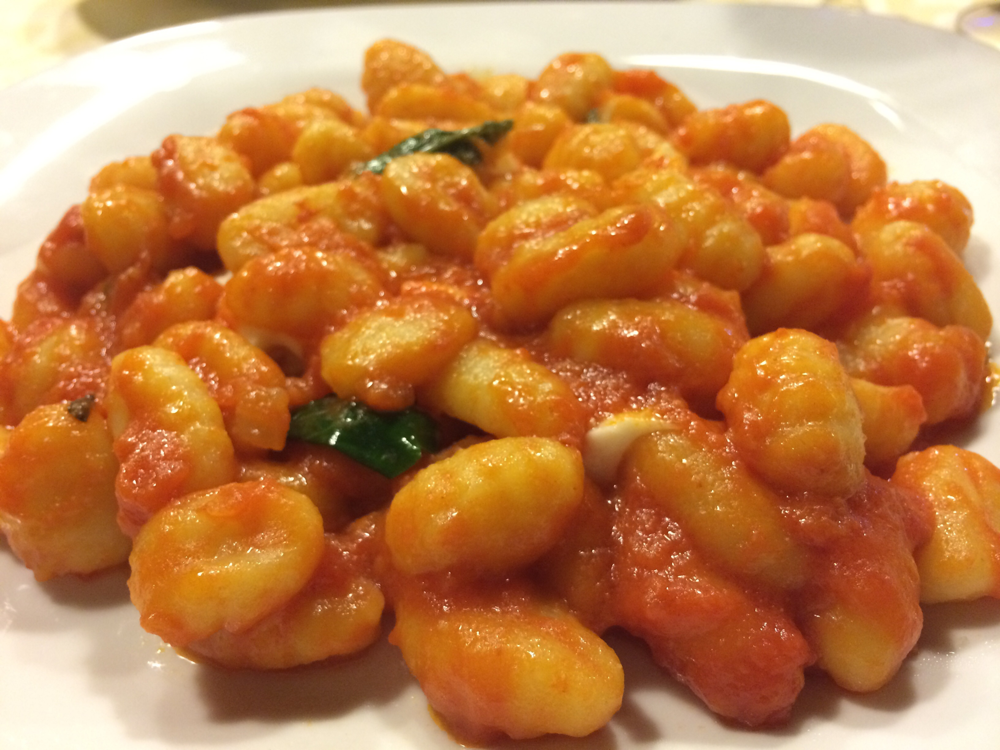
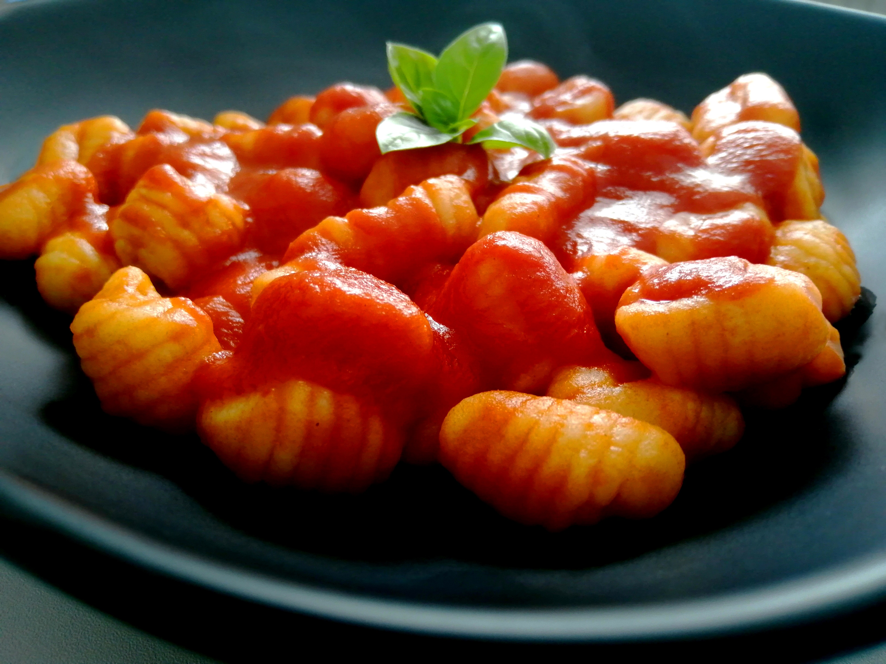
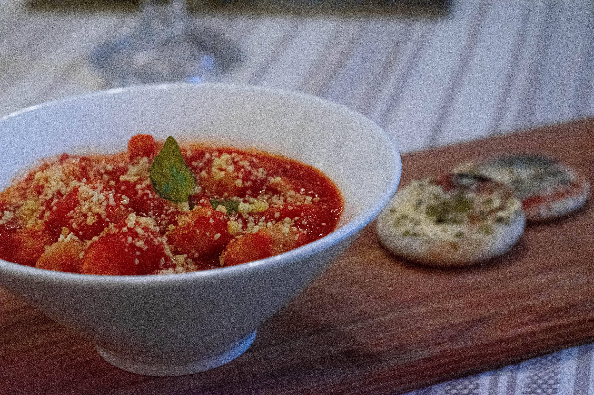
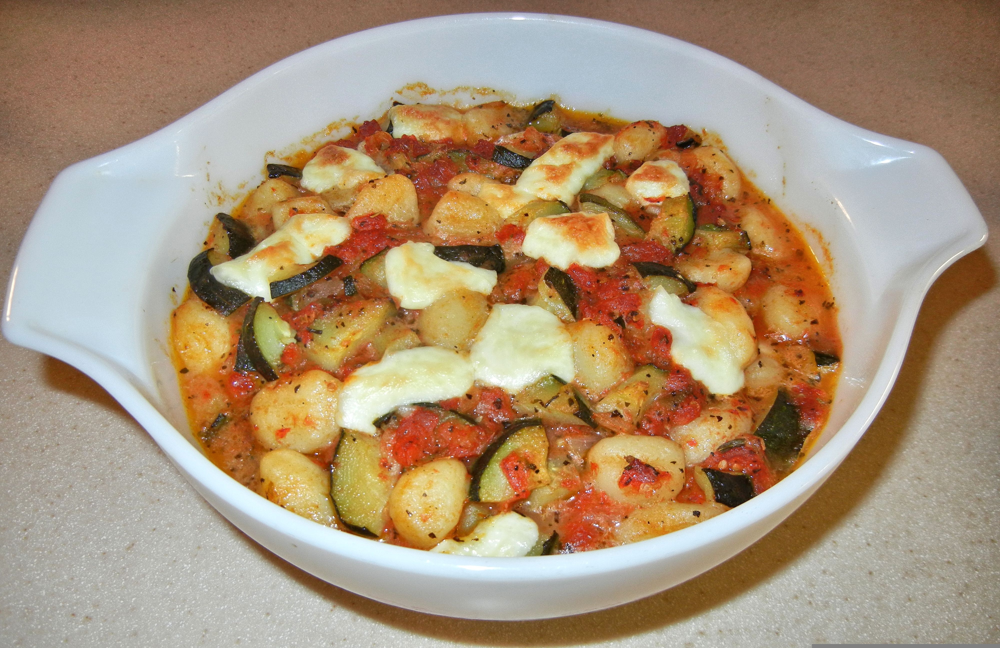

(Back to Home)
(Fettucine Alfredo) |
(Four-Cheese Ravioli) |
(Lasagna)

A type of dumpling dish, typically created using semolina (or plain wheat flour), mashed potato, and egg. Scrumptuous and flavorful, with a wide variety of options for unique spins and variations. Often recognized by its distinctive ridge, which are purpose-made to hold more sauce. Smooth variations also exist.
The modern gnocchi originate from Norther Italy, whose climate is well-suited for the successful cultivation of potato crops. This is especially important, as good-quality grain was consequently harder to grow, for the same reason, leading to the potato's gradual incorporation into Italian cuisine. Before the relatively recent adoption of the potato, gnocchi was traditionally made using squash and breadcrumbs, two staples of the peasant diet at the time. Unsurprisingly, gnocchi was considered cucina povera, or "poor cuisine."
The name gnocchi means "lumps" in Italian.


